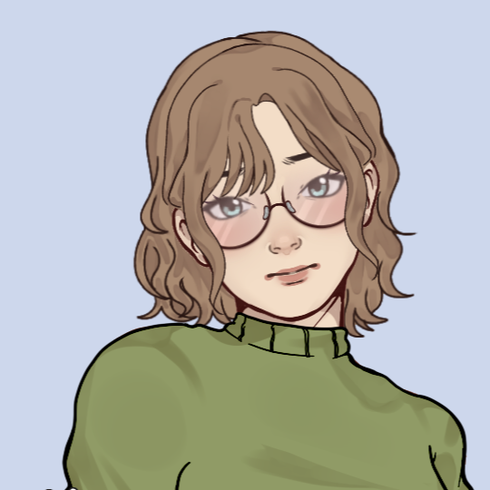
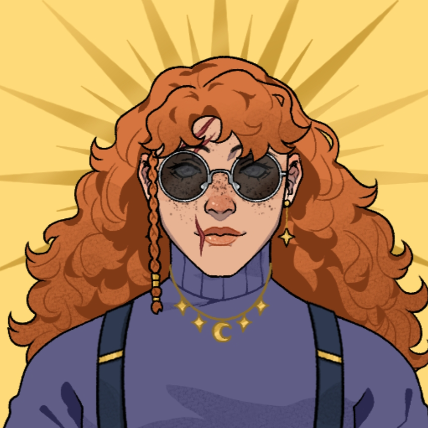
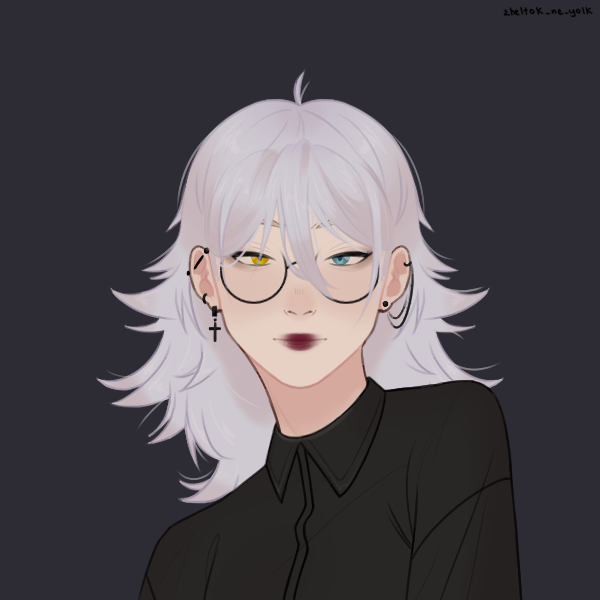
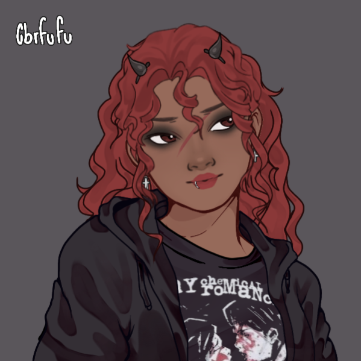
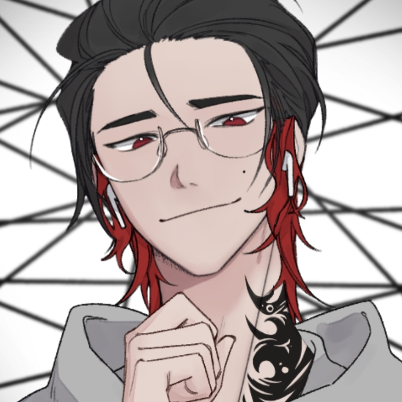
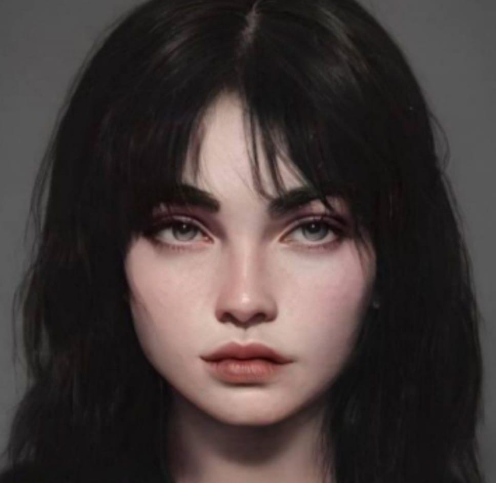
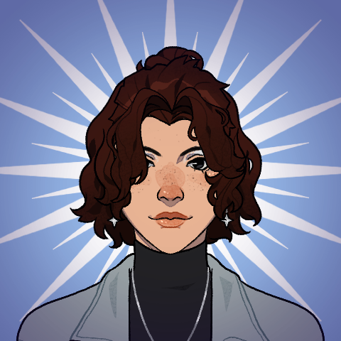

Carolina
como Elisa em "O Enigma da Mansão Oliveira"

Elisa Aldara (27 anos) é uma Agente da Ordem. Formada em Jornalismo, foi recrutada em 2022 após investigar um caso envolvendo desaparecimentos. É discreta, inteligente e observadora. Usa sua antiga profissão como disfarce em missões. Se destaca pela habilidade de conectar pistas sutis. Mantém sempre um ar calmo, mesmo em meio ao caos.
Isabella
como Kali em "O Enigma da Mansão Oliveira"

Kali Seaver é uma trabalhadora rural de 27 anos, parcialmente cega (quase completamente). Cresceu no interior e desde de criança aprendeu a cuidar do campo, acabou ficando cega por um acidente. Mora com sua fiel escudeira, Bernadette Seaver, sua galinha de estimação, e recebe a ajuda de seu vizinho, Antônio Becker.
Laura
como Luna em "Chave do Destino" e Naomi em "O Enigma da Mansão Oliveira

Luna Ainsworth é uma semideusa romana fruto da relação de Grace Ainsworth e do deus Marte. Atualmente com 17 anos, ela é introvertida e quieta, só falando normalmente após criar intimidade, o que aconteceu bem rápido com seus amigos Edward, Elizabeth e Kallista.

Naomi Borges é uma Ocultista da Ordem Paranormal de 21 anos. Desde criança ela foi questionadora, levando a acreditar em diversas teorias da conspiração. Como foi recrutada para a Ordem há apenas 1 ano, ela está extremamente ansiosa para aprender mais sobre o lado paranormal do planeta.
Nicollas
como Kallista em "Chave do Destino" e Nicolas em "O Enigma da Mansão Oliveira"

Kallista Aglaya era uma semideusa romana, filha da deusa Vênus com um mortal desconhecido. Tinha 18 anos, ela é confiante, charmosa e sabe bem como usar sua aparência e carisma a seu favor. Apesar disso, também tem um lado misterioso e às vezes parece estar em outro mundo. Cria laços com facilidade, mas nem sempre deixa que as pessoas a conheçam de verdade.

Nicolas Castelani é um jovem de 20 anos e um ator cheio de talento, mas carrega nos ombros o peso de uma relação complicada com os pais. Apesar do brilho nos palcos e da facilidade em interpretar qualquer papel, fora das câmeras ele lida com inseguranças e conflitos que tenta esconder do mundo. Seu verdadeiro eu só aparece quando se sente seguro com alguém.
Yasmin
como Elizabeth em "Chave do Destino" e Estella em "O Enigma da Mansão Oliveira"

Elizabeth Sinclair é uma semideusa grega, fruto da relação de Vivian Sinclair e do Deus Hades. Atualmente com 18 anos, ela é ambivertida e gentil, gosta muito de flores e sempre remete os amigos a uma flor específica. As primeiras pessoas com quem ela realmente sente que possui um laço de amizade foram o Edward, a Luna e a Kallista

Estella LeBlanc é uma ocultista da Ordem, que atualmente possui 28 anos. Foi recrutada há uns 5 anos atrás, ela entrou na Ordem para conseguir dinheiro para ir atrás de seus sonhos. Fez muitas missões mas poucos amigos.